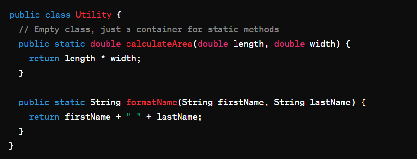

Dispensable
Comments

Comments sebaiknya digunakan secara hemat dan hanya jika memang diperlukan. Kode yang jelas dan mudah dimengerti seharusnya tidak memerlukan comment tambahan. Comments yang berlebihan dapat menjadi tanda bahwa kode tersebut tidak cukup deskriptif.
Before
After
Duplicate Code

Duplikasi kode adalah smell code yang umum terjadi ketika kode yang sama diulang di beberapa bagian dari sebuah aplikasi. Ini dapat membuat kode sulit untuk dipelihara, dan meningkatkan risiko bug dan kerentanan keamanan.
Before
After
Lazy Class

Lazy class adalah kelas yang tidak memberikan kontribusi yang cukup berarti dalam aplikasi. Mereka mungkin hanya memiliki beberapa metode atau fungsi yang jarang dipanggil, atau mungkin hanya berfungsi sebagai wadah untuk beberapa variabel.
Before
After
Logika 'calculateArea' sebaiknya dimasukkan ke dalam kelas-kelas yang relevan yang membutuhkannya. Untuk 'formatName', pertimbangkan untuk membuat kelas pembantu terpisah jika digunakan secara luas dan tidak terkait dengan domain spesifik.
Data Class

Data class adalah kelas yang sebagian besar terdiri dari properti dan hanya menyediakan metode-metode untuk mengakses dan memanipulasi data tersebut. Mereka tidak memiliki logika bisnis yang kompleks.
Before
After
Dead Code

Dead code adalah kode yang tidak pernah dieksekusi dan tidak lagi diperlukan dalam aplikasi. Ini bisa terjadi karena perubahan dalam persyaratan atau karena implementasi yang salah.
Before
After
Jika kode yang dijadikan komentar tidak lagi diperlukan, hapuslah. Jika kode yang dijadikan komentar mungkin berguna di masa depan, pertimbangkan untuk menggunakan kontrol versi atau fitur terpisah.
Speculative Generality

Speculative generality terjadi ketika Anda memperkenalkan abstraksi atau fungsionalitas yang tidak diperlukan saat ini, tetapi mungkin akan diperlukan di masa depan. Hal ini dapat menyebabkan kompleksitas yang tidak perlu dalam kode.
Before
After
Pertimbangkan untuk menggunakan antarmuka atau kelas abstrak untuk mendefinisikan perilaku umum dan memungkinkan implementasi konkret dengan logika gambar yang spesifik.
Referensi
Refactoring Guru: https://refactoring.guru/refactoring/smells/dispensables